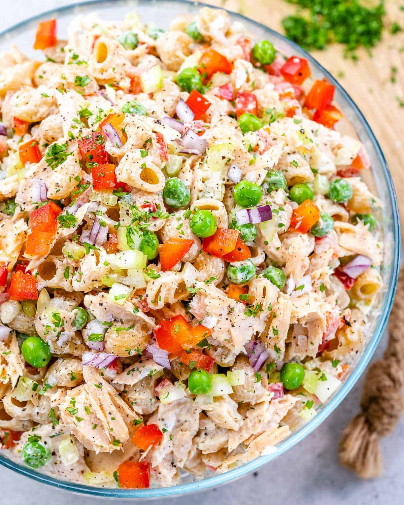
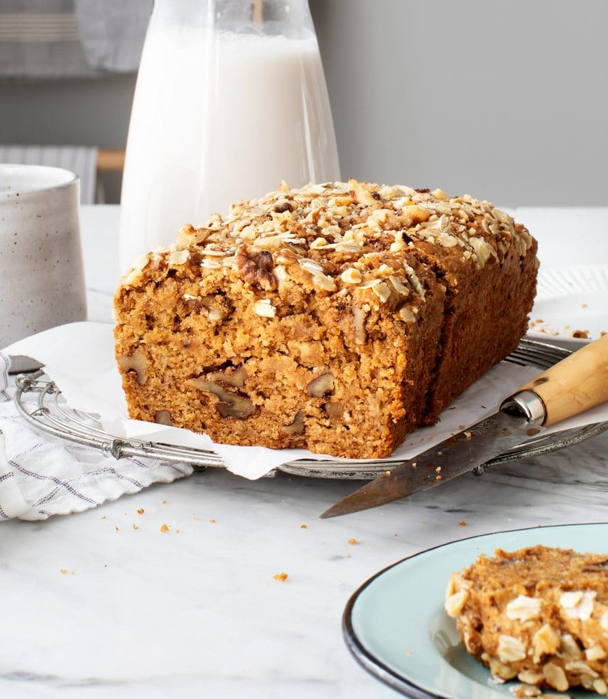
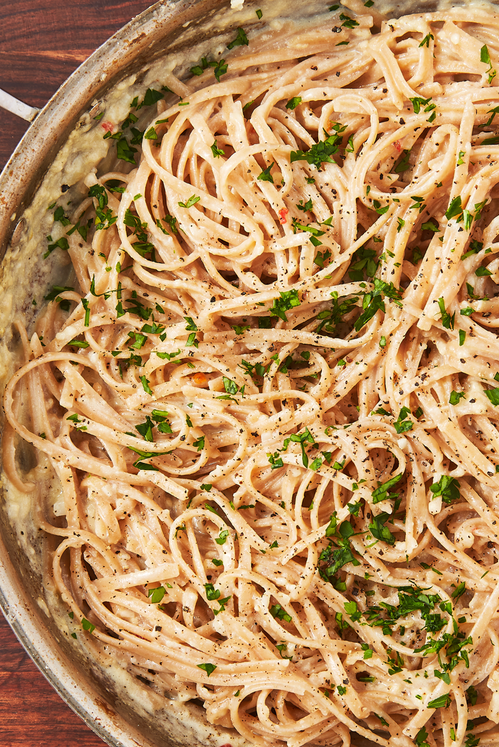

Our view on the current health situation
During the current pandemic there has been an increase of people staying home which has led to the drop of outdoors physical activities. This will inevitably cause the nation wide population to become unhealthy if we continue with the present lifestyles. This website will help and show you easy exercises that you can do at home to keep yourself fit and foods you can eat to have a balanced diet.
Our goals:
- To provide easy to do exercises
- To give recepies for healthy foods
- To help you maintain a healthy lifestyle
Exercise routines
Aerobic activity: you should try to get at least 150 minutes of aerobic activity in a week. Some simple exercises are brisk walking, jumping jacks and jump rope. For a more intense exercise you can do: running, squats, burpees and running in place for extended periods of time. Check this site for a more in depth explaination and to see the variety of exercises that there are.
Recipes to make
Here are 3 recommended receipes for breakfast, lunch and dinner.

| Tuna Macaroni Salad |
| Ingredients |
Procedure |
8 oz whole wheat macaroni
8 oz canned white tuna
2 ribs celery
1 red bell pepper
1/4 red onion
1 cup frozen peas |
- Boil water and cook pasta till its soft with a bit of firmness
- Drain and rinse the pasta then let it cool
- Chop all the seasoning ingredients and place into a bowl with dressing of choice
- Whisk the ingredients well
- When the pasta is chilled ad to the bowl of ingredients and mix together
- Serve and enjoy
|
Click here to check out the recipe in more detail.

| Banana Bread |
| Ingredients |
Procedure |
1 Cup of mashed bananas
1/2 Sugar
3/4 cup milk
1/3 extra-virgin oil
1 tsp vanilla extract
1 tsp apple cider vinegar
11/2 cups whole wheat pastry flour
1/2 almond flour
2 tsp baking powder
1/4 baking soda
1/2 tsp sea salt
1/2 tsp cinnamon
1/4 nutmeg
1/2 chopped walnuts |
- Preheat the oven to 350° F
- Brush a 9x5 inch bread pan with some olive oil
- Mix the mashed bananas with sugar, milk, olive oil, vanilla
and apple cider until totally combined in a large bowl
- In another bowl mix the flours, baking powder, baking soda, salt, cinnamon and nutmeg
- Mix both bowls of ingredients into one bowl then pour into the pan
- Crush and sprinkle the walnuts and oats onto the mix in the pan
- Bake for 42 to 50 minutes
|
Click here to check out the recipe in more detail.

| Skinny Alfredo |
| Ingredients |
Procedure |
12 oz whole-wheat linguine
1 tbsp extra-virgin oil
3 cloves garlic (minced)
2 tbsp all purpose flour
1 cup chicken broth
3/4 1% cup milk
1/2 cup grated parmesan cheese
2 tbsp yogurt
black pepper/ red pepper flakes
parsley |
- Cook linguine in a large pot of water
- Drain the pasta and set aside 1/2 cup of water
- Using a skillet pan heat the oil over medium heat
- Add garlic to the oil and cook for 1 minute till fragrant then evenly sprinkle flour in the pan.
Cook till light golden
- While whisking, add broth 2 tbsp at a time. WHen the mixture becomes smooth add more broth
- While stirring the mixture gradually add milk. Cook till the sauce becomes thick
- Remove the pan from the stove and add the cheese and yogurt. Season the mixture with salt,
pepper and a little red pepper flakes
- Add pasta and the water set aside to the sauce then mix. Place some parsley on top of everything when serving
|
Click here to check out the recipe in more detail.